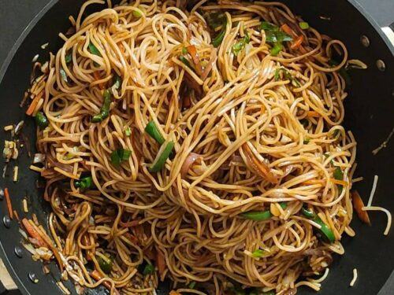

Chow Mein

Description
This easy Chow Mein recipe includes noodles and vegetables
with a simple chow mein sauce. It's healthy and quick to make from home.
Ingredients
-
Noodles
-
Prepped vegetables (bok choy, bell pepper, cabbage, carrots, onion)
-
Garlic
-
Vegetable oil
-
Mixed sauce
Steps
-
Cook the noodles and place them in a strainer to get rid of all excess water.
-
Next, heat the oil in a skillet over high heat and add in the onions, carrots, cabbage, and bell peppers.
-
Stir fry the vegetables for about 3 minutes.
-
After that, add in bok choy, ginger, and garlic.
-
Stir fry the chow mein noodles and the sauce with the vegetables until everything is mixed well together.
-
Enjoy!